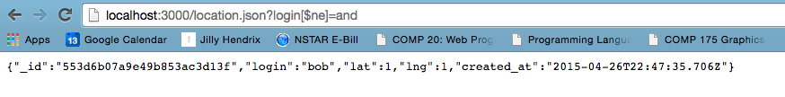

Security Assessment
Vulnerabilities of Ming Chow's Server-side Web Application by Andrea Compton
For this assessment I was hired to analyze the security of Ming Chow's server-side web application. The application uses Node.js with the Express web framework, and MongoDB which maintains 'location check-ins' including login, latitude, and longitude, for a long period of time. The application consists of three parts:
- A homepage listing names and thier respective check in time, latitude, and longitude sorted in descending order by timestamp.
- A GET /location.json API that returns a JSON string of the last known location for a specified login.
- A POST /sendLocation API that submits check-ins from any domain. Mandatory fields included login, lat, lng and successful submission of the three pieces of data results in one entry into the database and a list of all records in the database. If something is missing, an error occurs.
In order to test the security of the application I first looked at the code. From there I could tell there were security vulnerabilities which I then exploited using curl and simple MongoDB queries.
There were three security and privacy issues identified. The most severe is that the application is vulnerable to attacks that could bring down the site, create unnecessary alerts and redirections. There is also no sense of privacy as anyone can gain access to all the records in the database as well as searching and retrieving information of logins that are not thier own.
There were three issues found with Ming Chow's server-side web application.
Issue 1: Cross Site Scripting
- Location: Home page
- Severity: High. Any script can be inserted into the database via the login field and executed when the home page is loaded.
- Description: Injected a script using curl.
- Proof of Vulnerability:
- Resolution: In order to respove this issue, user input must be sanitized. This includes excoding special characters so script tags are not executed. For example change < to < and change > to >.
Issue 2: MongoDB Request Injection Attack
- Location: location.json
- Severity: High. Anyone can see all of the entries in the databse.
- Description: Found by searching for anything that was not equal to my login. While only one entry is returned at a time, by changing what the login does not equal, all entries can be found.
- Proof of Vulnerability:
- Resolution: In order to resolve this issue, user input again must be sanitized. This means cheching the input and making sure it only includes =login and not [$ne]=login.
Issue 3: Authentication
- Location: location.json
- Severity: Medium. Anyone can access a record in the database, even if it is not their own.
- Description: Attackers can randomly try logins until one is correct and they can then access all of that users information.
- Proof of Vulnerability: There is no authentication system or cookie storage to remember each user and only allow them to see their records.
- Resolution: Create an authentication system using an API or cookies.
There were three security vulnerabilities found with Ming Chow's server-side web application. They were listed according to thier severity, with cross site scripting being the most severe. Before this application is put into production I would highly recommend sanitizing all user input to mitigate any cross site scripting attacks. It will be more expensive in the future to try and resolve these issues than it will be to fix them now. The other vulnerabilities are less severe, unless sensitive information is being stored. In that case I would highly recommend providing an authentication system which will be costly upfront but may save time and keep clients in the long run.